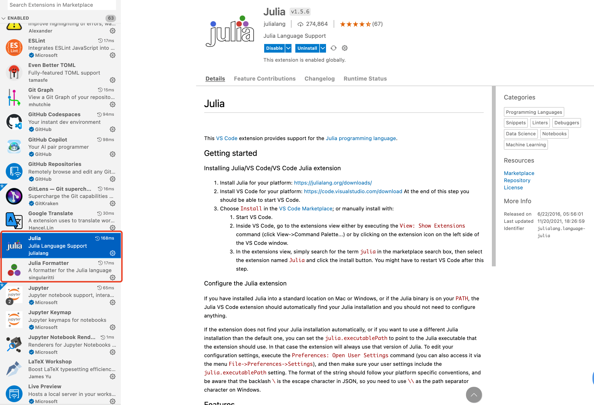
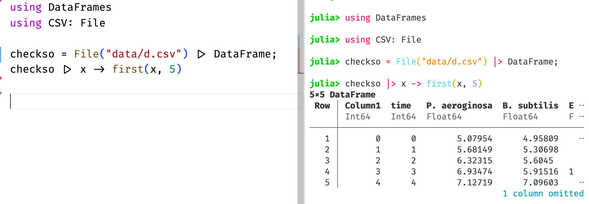
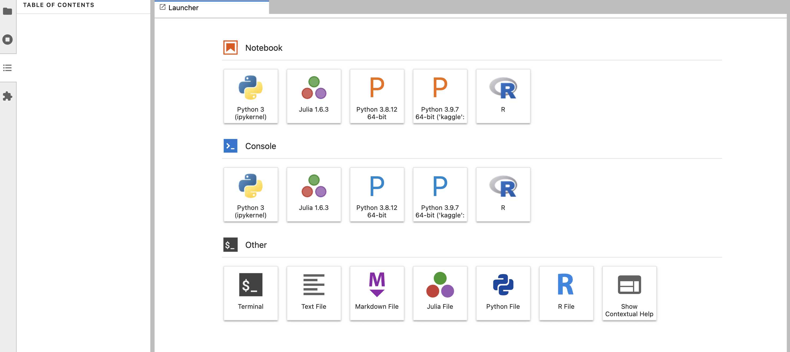

搭建 Julia 舒适编写环境
Contents
搭建 Julia 舒适编写环境¶
作为数据科学中的后起之秀，Julia 以其出色的运算速度，受到了不少人媒体的追捧。Julia 致力于成为一个全面的数据科学语言，不过由于社区依然不如 Python 和 R 庞大，经常会有包资源稀缺的情况。
就个人体验，Julia 最具优势的是科学计算，其 DifferentialEquations.jl 和 ModelingToolKit.jl 宇宙包含了目前最棒也是最全面的微分方程求解器。其他热门领域诸如机器学习、深度学习、数据分析等 Julia 还不够灵活，暂不推荐，静观其变。
经过最近一年的迭代，从 1.6 版本开始，采用安装包后自动预编译的策略，Julia 的启动速度已经大幅提升，VSCode 扩展的加载速度也比之前快了许多。
1. 安装 Julia¶
对 macOS/Linux 用户，有 Homebrew
# mac
brew install --cask julia
# linux
brew install ivaquero/chinese/julia-linux
对 Windows 用户，有 Scoop
scoop install ivaquero/scoopet/julia-cn
1.1. 源¶
打开 Julia 启动文件
macOS/Linux:
$HOME/.julia/config/startup.jlWindows:
%HOMEPATH%\.julia\config\startup.jl
添加如下语句
ENV["JULIA_PKG_SERVER"] = "https://mirrors.tuna.tsinghua.edu.cn/julia"
2. VSCode 调用 Julia¶
Julia 团队，曾经力推基于 Atom 的 Juno IDE，但目前已表示弃坑，全面投奔 VSCode。
2.1. 安装扩展¶
在扩展商店，搜索并安装 Julia 扩展即可

安装完毕后，”ctrl”+”, ” 进入配置，点击右上角的图标，打开配置的 json 文件。
{
"julia.deleteJuliaCovFiles": true,
"julia.completionmode": "qualify",
"julia.editor": "code",
"julia.enableCrashReporter": false,
"julia.enableTelemetry": false,
"julia.execution.codeInREPL": true,
"julia.execution.resultType": "both",
"julia.focusPlotNavigator": true,
"julia.lint.missingrefs": "symbols",
"julia.symbolCacheDownload": false
}
安装 Julia Formatter 扩展，添加配置
{
"juliaFormatter.alignConditional": true,
"juliaFormatter.alignPairArrow": true,
"juliaFormatter.alignStructField": true,
"juliaFormatter.removeExtraNewlines": true
}
2.2. 安装包¶
在 VSCode 中调用 Julia，推荐安装包 Revise.jl 。返回 Julia 命令行，进入包管理器
pkg> add Revise
安装 OhMyREPL，高亮终端
pkg> add OhMyREPL
在 startup.jl 中，添加
atreplinit() do repl
try
@eval using OhMyREPL
catch e
@warn "error while importing OhMyREPL" e
end
end
之后便可编写 Julia 代码。

安装
3. JupyterLab 调用 Julia¶
Jupyter 是 Julia、Python、R 三种语言缩写的集合，后两者的第三方库的管理可由 Conda 完成，而 Julia 的包的安装仍然需要 Julia 原生的包管理器来完成。
3.1. 安装包¶
安装 IJulia.jl
pkg> add IJulia
使用已安装的本地 Jupyter，键入如下命令
using IJulia
installkernel("Julia", "--depwarn=no")

3.2. Jupyter¶
自定义 Jupyter 路径，同样在startup.jl中，添加
# mac-arm
ENV["JUPYTER"]="/opt/homebrew/Caskroom/mambaforge/base/bin/jupyter"
# mac-intel
ENV["JUPYTER"]="/usr/local/Caskroom/mambaforge/base/bin/jupyter"
# windows
ENV["JUPYTER"]="c:\\scoop\\apps\\miniconda\\current\\Scripts\\jupyter.EXE"
# linux
ENV["JUPYTER"]="~/miniconda3/base/bin/jupyter"
4. 备注¶
4.1. 调用 Python 库¶
使用 PyCall.jl 可调用 Python 包，但在安装 PyCall.jl 前，需指明 Python 的路径。同样在startup.jl中，添加
# mac-arm
ENV["PYTHON"] = "/opt/homebrew/Caskroom/mambaforge/base/bin/python"
# mac-intel
ENV["PYTHON"] = "/usr/local/Caskroom/miniconda/base/bin/python"
# windows
ENV["PYTHON"] = "c:\\scoop\\apps\\miniconda\\current\\bin\\python.exe"
# linux
ENV["PYTHON"] = "~/miniconda3/base/bin/python"
4.2. Julia 包管理¶
# 添加
pkg> add [Package]
# 删除
pkg> rm [Package]
# 更新
pkg> update [Package]
# 更新所有
pkg> update
# 列出安装了的包
pkg> status
# 编译
pkg> build [Package]